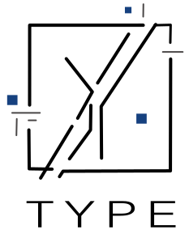
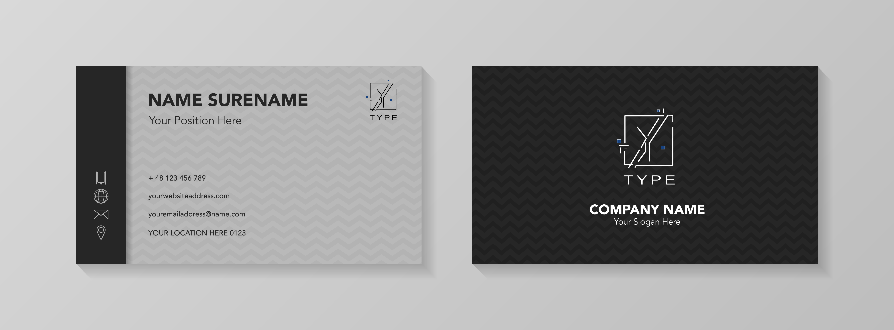
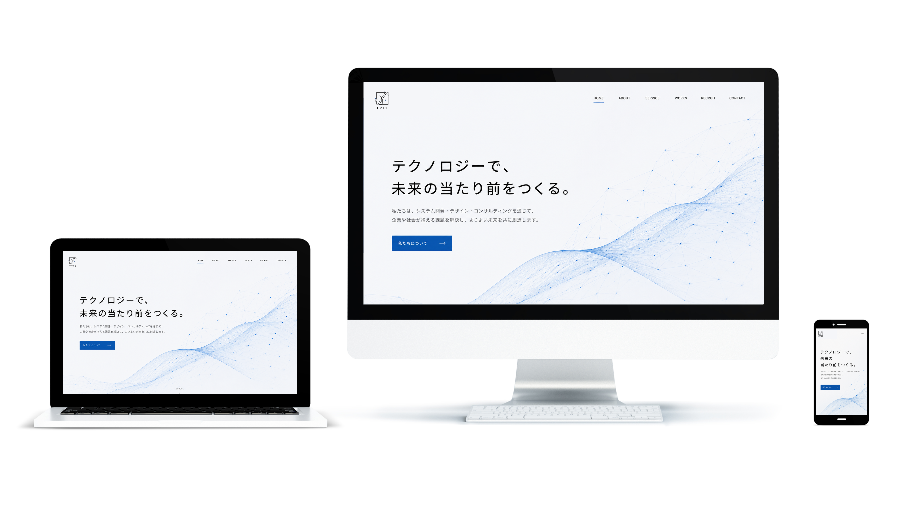

Parts Design / Logo Design
TYPE
線と余白の構成を活かし、タイポグラフィをベースに設計したIT企業のロゴデザインです。

作品名
TYPE
概要
タイポグラフィの構造を活かしながら、記号性のあるロゴとして成立することを目指して制作しました。 シンプルな線の中に、視覚的な面白さが生まれるよう構成しています。
ターゲット
デザインやアートに関心のある層、スタイリッシュで個性のあるブランドを想定しています。
デザイン意図
文字の形を単純に見せるのではなく、線の分解と再構成によって抽象的な印象を持たせました。 黒をベースにしつつ、アクセントカラーを少し加えることで、静かな中にも個性が出るよう意識しています。
工夫した点
ロゴ単体で印象に残ることと、文字としても読み取れることのバランスを調整し、グラフィック性と可読性の両立を目指しました。
Logo Application
使用イメージ
ロゴが実際の店舗で使用された際の印象が伝わるよう、名刺とデバイスのモックアップを制作しました。

